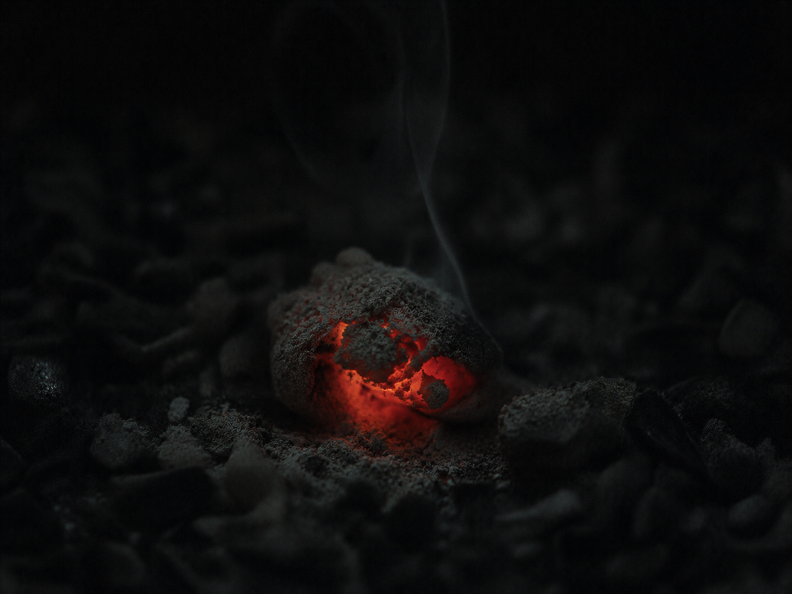

░░░░░░░░░░░░░░░░░░░░░░░░░░░░░░░░░░ · D E S C E N T · 25 / 40 · ░░░░░░░░░░░░░░░░░░░░░░░░░░░░░░░░░░

Even the loudest fire forgets itself by morning. Most of it leaves as smoke, and is gone. But one coal keeps the heat it was handed. Each breath of air it draws, it answers in red. Round it, the dark waits to see if it holds.